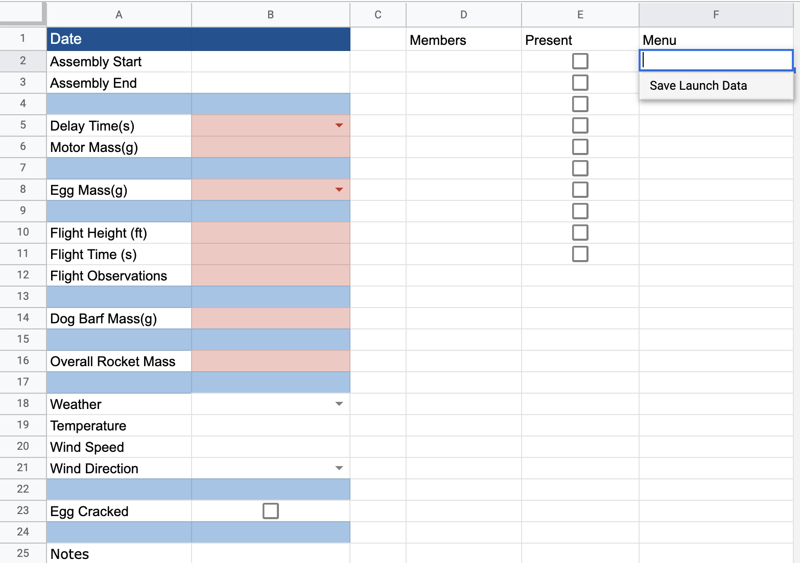
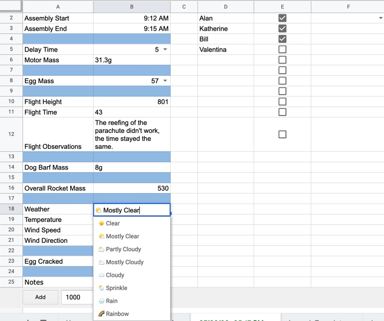
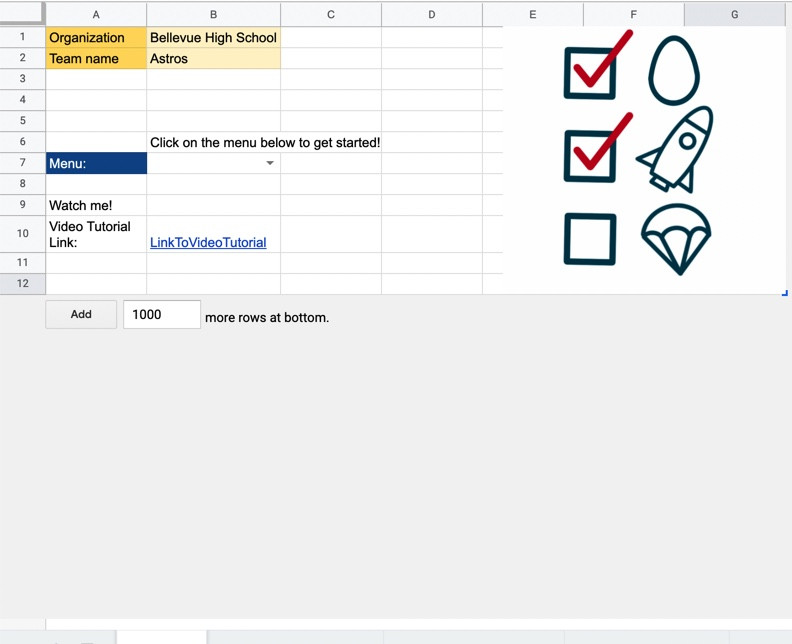

About
Purpose
I created Rocketsheet to make recording and analyzing launch data easier. Rocketsheet is quick to learn and simple to navigate. Gone are the days of flipping through endless pages of data sheets, now you and your team can view all launches or just one with the click of a button.
Explanation of and How to Use the Scripts on Rocketsheet
There are two functions on the script editor, one that will create a new launch sheet and another that will save the launch data and paste it into the 'Launches' spreadsheet.

The method onEdit(e) will first check to see if the sheet that was edited was the 'Home' sheet. If so, the method will check to see if the cell that was edited is the menu cell, or B7. If that is also true, the method will then set the value in the cell to the text "working..." and will call the method createLaunch(). The method createLaunch() sets up a new spreadsheet using the Launch Template and sets the date to the current day. Once the method createLaunch() is done, the script will go back to onEdit(e) and will clear the menu cell so that once again it is empty.

However, if the spreadsheet edited was not the 'Home' spreadsheet, the script will instead check to see if the spreadsheet edited has a cell on F1 with the text "Menu". If true, the script will then call the saveLaunchData(sheet) method. saveLaunchData(sheet) uses the passed in sheet to insert a column into the 'Launches' spreadsheet, where it will then copy over the data that was inputed into the launch data sheet. The for loop will take all the member's names and put them into a comma separated list.
If you want to add or remove the number of data entries in your Launch Template, do so on the Google spreadsheet, then go to your script editor and adjust the range that saveLaunchData(sheet) will copy to make the transfer of data from the individual launches to the 'Launches' spreadsheet accurate. More specifically, change the var sourceRange and destinationRange to get the correct range of data entries.
Creation Process
The first step I took to begin creating the Rocket Spreadsheet was to get all my ideas out of my head and onto paper. I decided to use my iPad so that I could both type up notes and also draw diagrams.

This is what the paper launch sheet looked like. Using the paper format took a long time to fill out, especially with cold hands that couldn't hold a pencil very well. In addition, there were moments where a team member's handwriting was not the best, resulting in data that couldn't be read.

I decided to first convert the paper version into a list on a spreadsheet. The paper version acted as a guide for what data entries I wanted. I also added some more entries that I thought would be helpful to keep track of.
Once I had the initial data entries down, I added empty cells in between certain entries to make it easier to read.

I then added color to make the overall list look more appealing as well as used conditional formatting in order to make sure that required pieces of data were always entered. I set the conditional formatting to be so that as long as the specified cells were empty, the cell would be filled with red.

Not only is recording each individual rocket launch important, but so is recording the members present to ensure that in the future we know who was present at the launch and knew what had happened. The Menu button is selected currently to show that once all information has been inputted into the spreadsheet, the app will then transfer all recorded data into the general Launches page.

This is what the Launches page looks like. I used the script editor to copy certain cells over from the specific launch sheet to a newly inserted column on the Launches page. See top of page for specific code.

You might have noticed that some of the cells have small triangles on them, also known as Data Validation that creates a drop down list. This is to signify that they have a drop down feature where you can select one of the given data. I especially used this feature for Delay Time, to make it easier to quickly record the delay put on the motor because it doesn't change very often from launch to launch. I also used the drop down to record the Egg Mass because in TARC (The American Rocketry Challenge) eggs must be within a certain weight range to be used, so to make it easier to fill out the launch sheet quickly, I included only the numbers within the range as possible choices to choose from. Last but not least, I set the Weather cell as a drop down, because there really are only 7 different types of weather where it is safe to launch in. I also included a rainbow option for funsies :)

Last but not least, I created the Home Page where everything starts from. I set the Organization and Team name to a random name, to show how they would be used to differentiate between different team's spreadsheets. This is also so that mentors managing multiple teams would know whose Rocketsheet they are looking at. Below the team and organization name, there is the Menu, where once the user clicks on the drop down, they can select Create New Launch and be on their way to recording data.
The icon you see on the right is also designed by me. Originally, it was created to act as the icon for a phone application. Phone application icons need to be simple and easy to recognize, which I accomplished through using minimal color, and clear symbols such as the egg, rocket, and parachute. I wanted to symbolize the use of Rocketsheet, which I illustrated through a checklist that showed the egg and the rocket were ready, but the rocket had not launched yet. Unfortunately, I realized that using google sheets was an easier way of accomplishing my goal, so I never got to use the image as an icon. I still wanted to honor my work, so I placed it on the Home page.